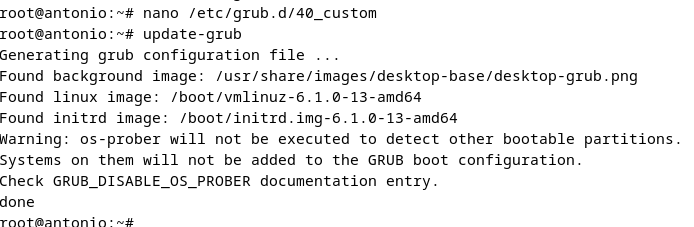

En esta introducción, exploraremos la importancia de bastionar el arranque de un sistema Debian, resaltando los riesgos asociados con un arranque no protegido y describiendo los conceptos y las técnicas clave que se utilizan para fortificar esta etapa crítica. Además, destacaremos cómo la seguridad en el arranque no solo protege el sistema en sí, sino que también puede ser un componente crucial para cumplir con estándares de seguridad y regulaciones específicas en entornos críticos.
Una vez estemos dentro del sistema entraremos con la terminal como root y empezaremos a configurar.
Introducimos este comando para acceder y poder modificar ciertos parametros.
Pero antes de ello para asegurarnos de que tuvieramos algun fallo podemos hacer una copia de seguridad por si algo fallara.
Este paso vamos a cambiar el GRUB_TIMEOUT de valor 5 a 0 como se muestra en la imagen, esto sirve para ocultar el GRUB en el arranque del sistema. Ademas tambien tenemos que escribir la linea GRUB_TIMEOUT_STYLE=hidden para que se oculte el tiempo del grub.
Una vez hagamos esto guardamos los cambios y salimos.
Despues aplicamos el comando update-grub para que se actualicen los datos.

El paso siguiente que vamos a ejecutar es el de encriptar nuestra contraseña.
Para ello ejecutaremos el comando que vemos en la imagen y es MUY IMPORTANTE, que guardemos el resultado del hash para mas adelante.
Ahora entraremos en el archivo de configuracion.
Y dentro de este pondremos las dos ultimas lineas que vemos acontinuacion.
en superusers pondremos el nombre que nos corresponda y en la contraseña escribiremos el nombre y pegaremos la contraseña encriptada que se nos ofrecio. La cual dijimos de guardar para esta ocasion.
Guardamos y salimos del archivo de configuracion.
Ahora tenemos que volver a actualizar los datos.

Ahora vamos a archivar los datos con fecha para saber cuando se hicieron los cambios
Por ultimo lo que vamos hacer es dar los permisos necesarios para que no tuvieramos problemas con que nadie pudiera editar el archivo.
Aqui tenemos una comprobacion de que todo funciona correctamente ya que al iniciar el equipo nos pide contraseña.
En conclusión, un buen bastionado del arranque en un sistema Debian o cualquier otro sistema operativo es esencial para garantizar la seguridad y la integridad desde el momento en que el sistema se inicia.